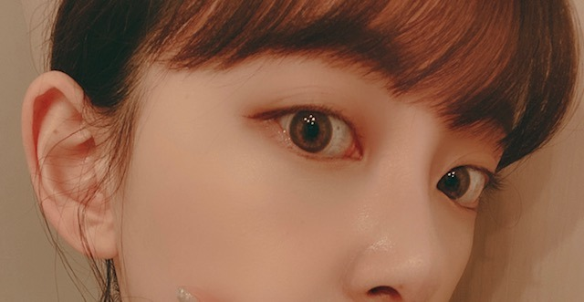
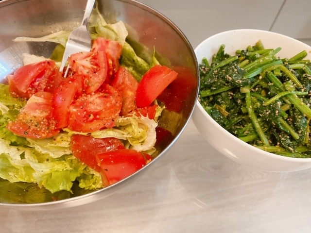
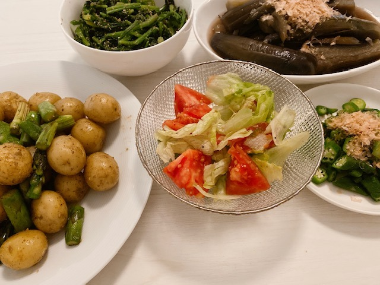

2020/0420Mon表情筋鍛えましょ
最近は
表情筋を鍛えています
むかつくなぁ
ちかいなぁ

実は白目にほくろがあるんですよ
知ってた方いるかな？
あ、もしかしたら
写真集にはたくさん写ってるかも
わ〜そう考えると
写真集発売、5月27日って
もうすぐやん
スタッフさんも
仕上げ作業に入ってくださっています
たくさんアイディアも言わせて
一緒に作り上げてきた自信作なので
みなさんに
はやく見てもらいたいです☺︎
御予約まだだよ〜という方はこちらから是非に
ポストカードも先着らしいです
ドキドキド
最近お肉ばかりむしゃむしゃ
食べていたので
今日から野菜中心の食事に変えようと思います

朝昼兼用ご飯はこちら
オリーブオイルドレッシングサラダに
小松菜和え
夜ご飯は
食べきれなかったサラダと小松菜プラス

ナスの煮浸し
おくら
ジャガイモとアスパラのガーリックバター
玄米
です☺︎
明日何作ろうかな
何がいいかな？
2020/04/20 18:30
コメント(393)
またゾンビメイクしてくださいーーーい！
あの企画めっちゃ面白かったです！
あの企画めっちゃ面白かったです！
沢山ブログ更新してくださってありがとうございます！
未央奈さん写真めっちゃ可愛いです
毎回楽しみにしてます
料理参考にして明日から作ってみます
未央奈さん写真めっちゃ可愛いです
毎回楽しみにしてます
料理参考にして明日から作ってみます
感想！（笑）
ホクロってそういう場所にもあるんですね～
初です。
ヘルシー！
菜食主義に見えるよ！（笑）
戦国時代とか生きれるじゃん。
おにくは明治とかからだし。
あ、炭水化物が付くんだった（笑）
ホクロってそういう場所にもあるんですね～
初です。
ヘルシー！
菜食主義に見えるよ！（笑）
戦国時代とか生きれるじゃん。
おにくは明治とかからだし。
あ、炭水化物が付くんだった（笑）
[表情筋鍛えましょ]ありがとー❗️
僕は爪の裏にほくろがあって、超レアケースだと思ってました。
白目にほくろ⁉️負けました。パワーワード過ぎる。
写真集で確認します。
健康的な食事ですねー。玄米様。
食器も白なのがストイックさを感じます。
手料理とか見ると距離が近くなった感じで嬉しいです❗️
次のブログと写真集楽しみです❗️
僕は爪の裏にほくろがあって、超レアケースだと思ってました。
白目にほくろ⁉️負けました。パワーワード過ぎる。
写真集で確認します。
健康的な食事ですねー。玄米様。
食器も白なのがストイックさを感じます。
手料理とか見ると距離が近くなった感じで嬉しいです❗️
次のブログと写真集楽しみです❗️
ブログ更新本当にありがたいです
いつも楽しみにしています
堀ちゃんの料理食べた〜い!
絶対おいしいでしょ
写真集買って見たいと思います
これからも頑張って下さい！
大好きです！
いつも楽しみにしています
堀ちゃんの料理食べた〜い!
絶対おいしいでしょ
写真集買って見たいと思います
これからも頑張って下さい！
大好きです！
肌の綺麗かー凄い。体調気をつけてね。
堀ちゃんがいるから頑張れる…！
オムライスとか見てみたいなぁー
堀ちゃんの料理食べたい！
写真集が楽しみ！！！！！
兄弟でカラーバルーンで遊んでいます
堀ちゃんも体にはくれぐれもお気をつけください！大好き♡
オムライスとか見てみたいなぁー
堀ちゃんの料理食べたい！
写真集が楽しみ！！！！！
兄弟でカラーバルーンで遊んでいます
堀ちゃんも体にはくれぐれもお気をつけください！大好き♡
乃木坂46のメンバーで１番好きなのは堀未央奈さんです。未央奈さんブログ更新ありがとう ✨。目にほくろ？知らなかった。未央奈さん関西弁出来るんだよね岐阜県出身だから。２期生は可愛い❤️子が多いな。さっき山崎怜奈さんのQさま見てた。何時もモバメもらってますどうもありがとう ✨。お家に居てもコロナウイルス怖いから未央奈さんならないで頑張って✊ ✊終息したら握手会やるかな？料理上手ですね。びっくり した。教えてよ⁉️つて今思った。良い嫁さんになれるな未央奈さん。僕神奈川県に住んでる。きいちゃんと絢音さんとかとどうぶつの森やってみたいけどスイッチもつてないです。
綺麗な目です。
ハンバーグとかはどうですか？
そう、考えると写真集発売が来月なんだよな
早い！
肉、食べ過ぎてた生活が続いていたのに、野菜を
食べようって自分で決めて食べるなんて！
さすが、美容には目がないんだから～

早い！
肉、食べ過ぎてた生活が続いていたのに、野菜を
食べようって自分で決めて食べるなんて！
さすが、美容には目がないんだから～
未央奈ちゃん、ブログ更新ありがとう〜！
白目にほくろってできるの⁉︎
知りませんでした‼︎
未央奈ちゃんの手料理美味しそうですね。
私も自炊挑戦してますが、今まで全然料理してこなかったので、すごいことになってます…
写真集楽しみです！
もるもっと
白目にほくろってできるの⁉︎
知りませんでした‼︎
未央奈ちゃんの手料理美味しそうですね。
私も自炊挑戦してますが、今まで全然料理してこなかったので、すごいことになってます…
写真集楽しみです！
もるもっと
未央奈ちゃん、ブログ更新ありがとう！
表情筋鍛えるために、PAOを4年くらい使ってます！
おススメです！
表情筋鍛えるために、PAOを4年くらい使ってます！
おススメです！
みおな最高だな毎日ブログ楽しみやー！
そもそも、白目にホクロできる人っているんですね
私の好きな献立は、
炊き込みごはん
豚汁
ハンバーグ
ほうれん草の胡麻和え
だ！！
だから何だと言われたらお返しする言葉もないのですが、、、
炊き込みごはん
豚汁
ハンバーグ
ほうれん草の胡麻和え
だ！！
だから何だと言われたらお返しする言葉もないのですが、、、
更新ありがとう✨
色んな料理作ってるんだね。
どれも美味しそう
なかでも、ジャガイモとアスパラのガーリックソテーは最高‼️
食べたいなぁ～
和洋中と色々つくってアップしてね☺️
ちなみに僕は早田の釜めし屋さんが好きです。
色んな料理作ってるんだね。
どれも美味しそう
なかでも、ジャガイモとアスパラのガーリックソテーは最高‼️
食べたいなぁ～
和洋中と色々つくってアップしてね☺️
ちなみに僕は早田の釜めし屋さんが好きです。
すち！すち！スチップ♥️
未央奈おつかれ〜。
ブログ更新ありがとうございます。
白目にほくろあったんだね。実は俺もあってあんまり好きじゃなかったんだけど未央奈と一緒ならまあいいかw
モバメでおすすめのドラマ教えてって言ってたからいくつか。
BBCでやってた「マスケティアーズ」ってドラマは個人的に大好き。デュマの三銃士がモデルで17世紀のパリを舞台にしてるんだけど、ストーリーもアクションも素晴らしい。あとトレヴィル隊長役の俳優さんが渋くてカッコいいw
シーズン1〜3まであるから機会があれば。
もう一つは割と有名な韓流ドラマの「奇皇后」。
時代劇で妹に勧められて観たんだけど、素直に面白かった。それまであんまり韓流とか観なかったけどこれはすごく良かった。
51話もあって長いから家にいることが増えた今の時期にちょうどいいかもw
前にブログを更新しすぎじゃないかって気にしてたけど、更新してくれるだけで俺らは嬉しいし、ありがたいから気にしなくて大丈夫だよ。
未央奈のそういう真面目なところ大好きだから。
自分のペースで書きたいときに好きなように書けばいいさ。ジコチューで行こう！w
最近また寒暖差あるから身体気をつけてね〜。
とか言ってる俺も今日はちょっとコンディション不良なのでもう寝ますw
では、Sweet dreams…
ブログ更新ありがとうございます。
白目にほくろあったんだね。実は俺もあってあんまり好きじゃなかったんだけど未央奈と一緒ならまあいいかw
モバメでおすすめのドラマ教えてって言ってたからいくつか。
BBCでやってた「マスケティアーズ」ってドラマは個人的に大好き。デュマの三銃士がモデルで17世紀のパリを舞台にしてるんだけど、ストーリーもアクションも素晴らしい。あとトレヴィル隊長役の俳優さんが渋くてカッコいいw
シーズン1〜3まであるから機会があれば。
もう一つは割と有名な韓流ドラマの「奇皇后」。
時代劇で妹に勧められて観たんだけど、素直に面白かった。それまであんまり韓流とか観なかったけどこれはすごく良かった。
51話もあって長いから家にいることが増えた今の時期にちょうどいいかもw
前にブログを更新しすぎじゃないかって気にしてたけど、更新してくれるだけで俺らは嬉しいし、ありがたいから気にしなくて大丈夫だよ。
未央奈のそういう真面目なところ大好きだから。
自分のペースで書きたいときに好きなように書けばいいさ。ジコチューで行こう！w
最近また寒暖差あるから身体気をつけてね〜。
とか言ってる俺も今日はちょっとコンディション不良なのでもう寝ますw
では、Sweet dreams…
未央奈～ こんにちは
連日のブログ更新ありがとうございます。
やっぱり、未央奈はこうでなくちゃね‥‥。たくさんのブログ更新、いつもありがとうございます。
「白目の中のほくろ？」ということで、いろんな雑誌や生写真、いろいろ見てみたけどよくわかりませんでした。今度の写真集には、写っているんですね？ でも、これって「ほくろ」って言うのかな？
ともかく、写真集、楽しみにしていますよ。もちろん、もう予約しましたよ。
野菜をふんだんに使った料理、何より健康的だし、料理の腕も上がるし、一石二鳥ですね。またどこかで披露してもらえる機会を楽しみにしております。
連日のブログ更新ありがとうございます。
やっぱり、未央奈はこうでなくちゃね‥‥。たくさんのブログ更新、いつもありがとうございます。
「白目の中のほくろ？」ということで、いろんな雑誌や生写真、いろいろ見てみたけどよくわかりませんでした。今度の写真集には、写っているんですね？ でも、これって「ほくろ」って言うのかな？
ともかく、写真集、楽しみにしていますよ。もちろん、もう予約しましたよ。
野菜をふんだんに使った料理、何より健康的だし、料理の腕も上がるし、一石二鳥ですね。またどこかで披露してもらえる機会を楽しみにしております。
未央奈さん、こんばんは
2枚目の写真で
あっ、ほくろあるってなりました
今まで知らなかったから
新しい発見ができて嬉しいです
髪型、表情、色合い、アングル
今日の自撮り全部お気に入りです
近すぎる写真も、また載せて欲しい～
1枚目の写真が、おもしろ可愛くて良き！
写真集、早く見たいなぁ
ナスの煮浸し食べたいf(^_^)
未央奈さん、納豆食べられますか
納豆を卵にくるんで焼くだけの
納豆オムレツ
簡単で美味しいですよ(^_^)
いつも更新ありがとうございます
2枚目の写真で
あっ、ほくろあるってなりました
今まで知らなかったから
新しい発見ができて嬉しいです
髪型、表情、色合い、アングル
今日の自撮り全部お気に入りです
近すぎる写真も、また載せて欲しい～
1枚目の写真が、おもしろ可愛くて良き！
写真集、早く見たいなぁ
ナスの煮浸し食べたいf(^_^)
未央奈さん、納豆食べられますか
納豆を卵にくるんで焼くだけの
納豆オムレツ
簡単で美味しいですよ(^_^)
いつも更新ありがとうございます
堀ちゃん！更新ありがとう！
遠くても近くでも
やっぱり堀ちゃんは
肌がキレイだし、白いよね！
見ていて心が浄化されるようです笑
さすが乃木の美容番長！！
写真集楽しみにしてるよ！！
お肉とか食べる時は
食べて、野菜の時は
野菜中心の体に優しい
食事で見習うような食生活！
さすがです！！
小松菜何で和えてるのかな？
ごま油かな？
個人的に
ごま油和えの小松菜が1番好きです！
この時期、大根の葉をごま油で
炒めるとめちゃめちゃおいしいよ！
おすすめ！！玄米のお供に最適！
明日は何を作るのかな？？笑
ブログあげてね！
待ってます！
次回の更新も楽しみにしてるよ！
では！
おやすみおな〜！！
遠くても近くでも
やっぱり堀ちゃんは
肌がキレイだし、白いよね！
見ていて心が浄化されるようです笑
さすが乃木の美容番長！！
写真集楽しみにしてるよ！！
お肉とか食べる時は
食べて、野菜の時は
野菜中心の体に優しい
食事で見習うような食生活！
さすがです！！
小松菜何で和えてるのかな？
ごま油かな？
個人的に
ごま油和えの小松菜が1番好きです！
この時期、大根の葉をごま油で
炒めるとめちゃめちゃおいしいよ！
おすすめ！！玄米のお供に最適！
明日は何を作るのかな？？笑
ブログあげてね！
待ってます！
次回の更新も楽しみにしてるよ！
では！
おやすみおな〜！！
ブログ更新ありがとうございます！
近くてもめっちゃ可愛い！！
料理上手ですね！いろいろな料理見てみたいな〜
次回のブログも楽しみにしています！
近くてもめっちゃ可愛い！！
料理上手ですね！いろいろな料理見てみたいな〜
次回のブログも楽しみにしています！
もう可愛すぎるので寝ます！！
未央ちゃんブログ更新有り難うございます。未央ちゃんって頑張るね。本当に素敵です。応援してます。写真集もうすぐですね。楽しみです。
お野菜美味しそうですね。普段は野菜といえばもやししか食べてないなと反省します。
お野菜美味しそうですね。普段は野菜といえばもやししか食べてないなと反省します。
更新ありがとうーー
写真集楽しみーーーー
浪人がんばれそー
写真集楽しみーーーー
浪人がんばれそー
未央奈！！
ブログ更新ありがとう
今日の夜は野菜たっぷりのどんぺい焼きだったよ〜！！
キャベツとお肉とマッシュルーム入れて卵を乗せてお好みソースをかけたら完成！！
めっっっっちゃ美味しかったから試してみてね
ブログ更新ありがとう
今日の夜は野菜たっぷりのどんぺい焼きだったよ〜！！
キャベツとお肉とマッシュルーム入れて卵を乗せてお好みソースをかけたら完成！！
めっっっっちゃ美味しかったから試してみてね
未央奈さん、ブログ更新ありがとう。どこにでもいるおっさんです。
ほくろには気がつかなかったなぁー、不覚。
最近また、「路面電車の街」をループしてます。
飛鳥さんの純粋な透明感。美月さんの個性的な歌声。そして、未央奈さんの圧倒的な存在感。貴い。
他人の車の上に座るのはよくないよ。しかも、高級そうな車。傘、似合ってたけど。
二代目箸くん。おうち時間、楽しんでね。
ひでき
ほくろには気がつかなかったなぁー、不覚。
最近また、「路面電車の街」をループしてます。
飛鳥さんの純粋な透明感。美月さんの個性的な歌声。そして、未央奈さんの圧倒的な存在感。貴い。
他人の車の上に座るのはよくないよ。しかも、高級そうな車。傘、似合ってたけど。
二代目箸くん。おうち時間、楽しんでね。
ひでき
こんばんは！
自分はコロナの影響で最近弟にご飯をつくることが多いです！未央奈ちゃんの料理めっちゃ美味しそう！^_^
自分はコロナの影響で最近弟にご飯をつくることが多いです！未央奈ちゃんの料理めっちゃ美味しそう！^_^
こんばんは☺︎
未央菜ちゃん沢山ブログ更新してくれるから本当に嬉しい❤︎
私も野菜多めの食事したいなぁ。
未央菜ちゃんのサラダみて食べたくなっちゃった♬
いつもありがとう！大好き〜！
未央菜ちゃん沢山ブログ更新してくれるから本当に嬉しい❤︎
私も野菜多めの食事したいなぁ。
未央菜ちゃんのサラダみて食べたくなっちゃった♬
いつもありがとう！大好き〜！
写真集楽しみです。絶対買います！！
いろんな表情できて偉い
かわいくて偉い
かわいくて偉い
明日うちはビーフシチューだよ！
表情筋鍛えてるみおな、近いみおな、かわいい！
堀ちゃんこんばんは！
5月27日までもう1ヶ月ちょっとなんですねー！
楽しみにしている時間は早いもので( ´ ▽ ` )
早く見たくてたまりません〜、一日千秋の想いです(o^^o)
ちなみにポストカードは全部好きですが、悩みに悩んで1つあげるなら丸善ジュンク堂ver.が特にお気に入りです、ポーズとか表情とか雰囲気とか、全身を通してめっちゃ可愛いので(*´ー｀*)♩
ほんと楽しみ！！
最近は堀ちゃんが見せてくれる料理の写真も楽しみの一つです(o^^o)♩
サムギョプサルめっちゃ好きなので目で美味しかったですし、ジャガアスパラのガーリックバターも食べてみたいな〜( ´ ▽ ` )
今は食の楽しみが大事ですね、感じさせてくれてありがとうございます、また見せてください！(^^)
明日は…ビーフシチューで！笑
今日はふと女子校カルテットの「人生を考えたくなる」の歌詞を眺めてしみじみとする時間がありました( ´ ▽ ` )
「恋だってしたことはあるし 仕事もしているし
ぼんやりと結婚も想像したりして」
「喜びも悲しみもいっぱい 思い出溢れるし
諦めてない夢もまだ一つあるけど」
忙しく働いてたときは考える余裕もなかったですが、今は怪我で少し入院して時間があるので、日々を思い返してみるとこのフレーズがグサーッと刺さるなぁと( ´ ー ` )
今まで仕事を頑張ってはいたけど、自分のやりたい方向に向かって頑張れていたのかと考えると、自信を持って言い切れないなぁと( ´ 〜 ` )
でも、ネガティブな感じではなくて、毎日のモヤモヤっとしてた気持ちが言語化されて、スッキリした気分です(^^)
諦めてない夢もあるし、もっと素敵にもなりたいので、体が元に戻ったらこれまでの状況をちょっと変えられるような行動をしてみようと決めました( ´ ▽ ` )
やりたいことをやれている人の方が少ないのかもしれませんが、だからといって自分がそれで妥協していい理由ではない、目標があるんだったらその方向に向けて努力しなきゃ、1ミリも達成に近づいたりはしない。
当たり前のことですが、改めて思いました(^^)
いきなり語ってすみません、なんとなく書きたくなったので(^^;)
でも、目標に向かい続けている堀ちゃんをいつも見ているから、こう思えるのがしれません( ´ ▽ ` )
乃木坂にはほんとに歌詞が良い曲が多いです、秋元さんが乃木坂のイメージを念頭に置いてるからこういう雰囲気が作られるのかなぁと思ったり(o^^o)
堀ちゃんも好きなフレーズとかあったら教えてもらえると嬉しいです( ´ ▽ ` )♩
では！またコメントさせてくださいー！
5月27日までもう1ヶ月ちょっとなんですねー！
楽しみにしている時間は早いもので( ´ ▽ ` )
早く見たくてたまりません〜、一日千秋の想いです(o^^o)
ちなみにポストカードは全部好きですが、悩みに悩んで1つあげるなら丸善ジュンク堂ver.が特にお気に入りです、ポーズとか表情とか雰囲気とか、全身を通してめっちゃ可愛いので(*´ー｀*)♩
ほんと楽しみ！！
最近は堀ちゃんが見せてくれる料理の写真も楽しみの一つです(o^^o)♩
サムギョプサルめっちゃ好きなので目で美味しかったですし、ジャガアスパラのガーリックバターも食べてみたいな〜( ´ ▽ ` )
今は食の楽しみが大事ですね、感じさせてくれてありがとうございます、また見せてください！(^^)
明日は…ビーフシチューで！笑
今日はふと女子校カルテットの「人生を考えたくなる」の歌詞を眺めてしみじみとする時間がありました( ´ ▽ ` )
「恋だってしたことはあるし 仕事もしているし
ぼんやりと結婚も想像したりして」
「喜びも悲しみもいっぱい 思い出溢れるし
諦めてない夢もまだ一つあるけど」
忙しく働いてたときは考える余裕もなかったですが、今は怪我で少し入院して時間があるので、日々を思い返してみるとこのフレーズがグサーッと刺さるなぁと( ´ ー ` )
今まで仕事を頑張ってはいたけど、自分のやりたい方向に向かって頑張れていたのかと考えると、自信を持って言い切れないなぁと( ´ 〜 ` )
でも、ネガティブな感じではなくて、毎日のモヤモヤっとしてた気持ちが言語化されて、スッキリした気分です(^^)
諦めてない夢もあるし、もっと素敵にもなりたいので、体が元に戻ったらこれまでの状況をちょっと変えられるような行動をしてみようと決めました( ´ ▽ ` )
やりたいことをやれている人の方が少ないのかもしれませんが、だからといって自分がそれで妥協していい理由ではない、目標があるんだったらその方向に向けて努力しなきゃ、1ミリも達成に近づいたりはしない。
当たり前のことですが、改めて思いました(^^)
いきなり語ってすみません、なんとなく書きたくなったので(^^;)
でも、目標に向かい続けている堀ちゃんをいつも見ているから、こう思えるのがしれません( ´ ▽ ` )
乃木坂にはほんとに歌詞が良い曲が多いです、秋元さんが乃木坂のイメージを念頭に置いてるからこういう雰囲気が作られるのかなぁと思ったり(o^^o)
堀ちゃんも好きなフレーズとかあったら教えてもらえると嬉しいです( ´ ▽ ` )♩
では！またコメントさせてくださいー！
お！最近は表情筋鍛えてるんだね。
こっちも鍛えるわ。今決めた。
むかつかないよ！笑
かわいいじゃん。
うわーーちかーーい！！！
え！ちかーーい！！
こんなに近くでみたのはじめて。笑
かわいい。。
おー！白目にほくろ。
レアだね。
755で教えてもらったけど目が離せない人なんだねっ。注目してまっせ〜♪
あ、白目のほくろは知らなかったわ。めんぼくない。。とほほ
写真集で確認するぅ〜〜
ほんとだ！5月27日もうすぐ！！
そろそろ写真集のタイトル発表される？
秋元先生のコメントも期待してる。笑
タイトル予想は心の中でしとくね。楽しみだから。(^-^)
自信作。わくわく。わくわく。
いっぱい予約してるよーん☺︎
ドキドキド。新しい。笑
えー！野菜中心の食事になるのー！
ほうれん草のごま和えが大好きなんよー。
最近作ってないから作ろうかな。と小松菜和えみて思った。笑
すごい野菜生活だぁ〜
１つ１つ丁寧に作られてる。
え、みおちゃん作ったの？？
きれいに切れるんだね！包丁捌き。
煮物はどう〜？
結構好きなんよ。☺️
こっちも鍛えるわ。今決めた。
むかつかないよ！笑
かわいいじゃん。
うわーーちかーーい！！！
え！ちかーーい！！
こんなに近くでみたのはじめて。笑
かわいい。。
おー！白目にほくろ。
レアだね。
755で教えてもらったけど目が離せない人なんだねっ。注目してまっせ〜♪
あ、白目のほくろは知らなかったわ。めんぼくない。。とほほ
写真集で確認するぅ〜〜
ほんとだ！5月27日もうすぐ！！
そろそろ写真集のタイトル発表される？
秋元先生のコメントも期待してる。笑
タイトル予想は心の中でしとくね。楽しみだから。(^-^)
自信作。わくわく。わくわく。
いっぱい予約してるよーん☺︎
ドキドキド。新しい。笑
えー！野菜中心の食事になるのー！
ほうれん草のごま和えが大好きなんよー。
最近作ってないから作ろうかな。と小松菜和えみて思った。笑
すごい野菜生活だぁ〜
１つ１つ丁寧に作られてる。
え、みおちゃん作ったの？？
きれいに切れるんだね！包丁捌き。
煮物はどう〜？
結構好きなんよ。☺️
お疲れ様なのです└(ﾟ∀ﾟ└) (┘ﾟ∀ﾟ)┘
色んな料理を作って食べて！るんるんやん！
何を作るか？考えるの楽しいよね！
色んな料理を作って食べて！るんるんやん！
何を作るか？考えるの楽しいよね！
未央奈ブログ更新ありがとう！
表情筋を鍛える未央奈も可愛い！！
眼球にホクロってできるんだね！
知らなかった！
料理も頑張っててスゴい！
自分は何もしてないから尊敬する！
これからも応援してるよ！
体調には本当に気をつけてね！
by未央奈推しのブラックコーヒー
表情筋を鍛える未央奈も可愛い！！
眼球にホクロってできるんだね！
知らなかった！
料理も頑張っててスゴい！
自分は何もしてないから尊敬する！
これからも応援してるよ！
体調には本当に気をつけてね！
by未央奈推しのブラックコーヒー
堀さん、こんばんは。
表情筋を鍛えますと、当然表情豊かになれますし、笑顔もよりきれいになれるでしょう。ペコちゃん顔に口角上げと、表情筋の体操も役に立つこと間違いなし。にっ（口角上げ 笑）。
今やなかなか外食も厳しい。僕は自炊しないので、出来合いのお惣菜やお弁当を食べる生活が続いています。なので意識的に野菜を多くいただくよう気をつけています。ビタミンや食物繊維をたくさん摂って健康第一ですごしましょう。
2ndソロ写真集の発売、楽しみですね。
ではまたコメントします。おやすみおな。
さらばだ、また会おう！（気球に乗って去りぬ〜）
表情筋を鍛えますと、当然表情豊かになれますし、笑顔もよりきれいになれるでしょう。ペコちゃん顔に口角上げと、表情筋の体操も役に立つこと間違いなし。にっ（口角上げ 笑）。
今やなかなか外食も厳しい。僕は自炊しないので、出来合いのお惣菜やお弁当を食べる生活が続いています。なので意識的に野菜を多くいただくよう気をつけています。ビタミンや食物繊維をたくさん摂って健康第一ですごしましょう。
2ndソロ写真集の発売、楽しみですね。
ではまたコメントします。おやすみおな。
さらばだ、また会おう！（気球に乗って去りぬ〜）
みおな毎日ありがと
未央奈～～～～～～。
ごはん超うまそう。しかも私の好物ばっかぁ。未央奈と結婚したら、毎日こんな美味しいごはんが食べれるんだね。しかし、かなりの高倍率。無理かぁ。
写真集は水着カットがあるのかしら。へへ。これも楽しみ。
ちょっと夜更かししすぎかな。コロナ対策で早く寝よう。免疫力あげておかなきゃね。おやすみなさい。
ごはん超うまそう。しかも私の好物ばっかぁ。未央奈と結婚したら、毎日こんな美味しいごはんが食べれるんだね。しかし、かなりの高倍率。無理かぁ。
写真集は水着カットがあるのかしら。へへ。これも楽しみ。
ちょっと夜更かししすぎかな。コロナ対策で早く寝よう。免疫力あげておかなきゃね。おやすみなさい。
ガキの使いやあらへんで！や笑ってはいけないって見ますか？
堀ちゃんが全部作ったん？
だとしたら素直に凄い 素晴らしい
だとしたら素直に凄い 素晴らしい
未央奈の手料理食べたい
未央奈めっちゃキレイ
未央奈めっちゃキレイ
未央奈さんブログ更新ありがとう ✨。目にほくろ？知らなかった。未央奈さん大好き ♥️❤️です。写真集買うの楽しみにしてます。未央奈さん何時もモバメもらってますどうもありがとう ✨。未央奈さん料理上手ですね。びっくり した。未央奈さん今度は僕に料理作ってよ。これからも推しメンですので全力で堀未央奈さん応援してるよ❗こんなに可愛い❤️子他にはいない未央奈さんが１番可愛い❤️です。今日の料金はお母さんと一緒に作ったの？☺️今度食べてみたい。
たんぱく質は取らないの？
未央奈ちゃん、こんばんは(^o^)/
肉中心の食事から野菜中心にって極端過ぎるよ？
もっと普段からバランスよく食べた方が良いと思うよ？
糖質ダイエットとかたんぱく質ダイエットとかよく聞くけど、たんぱく質・脂質・糖質は身体を作るのに大事な三大栄養素だから絶対に外しちゃダメだよ
変なダイエット情報に惑わされないようにね
俺も白眼に黒子あるよ
瞼の裏側だから普段は見えないけどね
肉中心の食事から野菜中心にって極端過ぎるよ？
もっと普段からバランスよく食べた方が良いと思うよ？
糖質ダイエットとかたんぱく質ダイエットとかよく聞くけど、たんぱく質・脂質・糖質は身体を作るのに大事な三大栄養素だから絶対に外しちゃダメだよ
変なダイエット情報に惑わされないようにね
俺も白眼に黒子あるよ
瞼の裏側だから普段は見えないけどね
ずーっと楽しみにしてた写真集あと１ヶ月
わくわくすぎて頑張れるよありがとう
わくわくすぎて頑張れるよありがとう
堀さん、こんばんは。
肌と瞳が美しいですね。高速瞬き以外にも高速ベロの練習でしょうか。高速に走りながらそれらをするという特技もいいかもしれませんね。
写真集発売が少しずつ近づいて来ましたね。白目の黒子は気付かなかったので、発売したら白目に注目したいと思います。
料理は彩り良くて美味しそうです。まだ気温が暖かくなる前にシチューとかの冬用の料理なんてどうでしょうか。
あとモバメ見ました。堀さんに幸せになってほしいって思うから、堀さんが前向きになろうとする姿を見ると嬉しくなるし僕も前向きになろうって思えます。いつも元気づけてくれてありがとうございます。ブログ更新してくれて嬉しいです。
肌と瞳が美しいですね。高速瞬き以外にも高速ベロの練習でしょうか。高速に走りながらそれらをするという特技もいいかもしれませんね。
写真集発売が少しずつ近づいて来ましたね。白目の黒子は気付かなかったので、発売したら白目に注目したいと思います。
料理は彩り良くて美味しそうです。まだ気温が暖かくなる前にシチューとかの冬用の料理なんてどうでしょうか。
あとモバメ見ました。堀さんに幸せになってほしいって思うから、堀さんが前向きになろうとする姿を見ると嬉しくなるし僕も前向きになろうって思えます。いつも元気づけてくれてありがとうございます。ブログ更新してくれて嬉しいです。


僕も表情筋を鍛えたい。未央奈みたいにきれいに口角を上げられるようになりたいんだよね。表情の豊かな未央奈って素敵。
白目のホクロは気づかなかったよ。今まで知らなかった未央奈のことを知るのってなんか嬉しい。写真集予約したよ。楽しみだなあ。
野菜中心の食事は健康的でいいね。美味しそう！未央奈の手料理食べてみたい！
では！